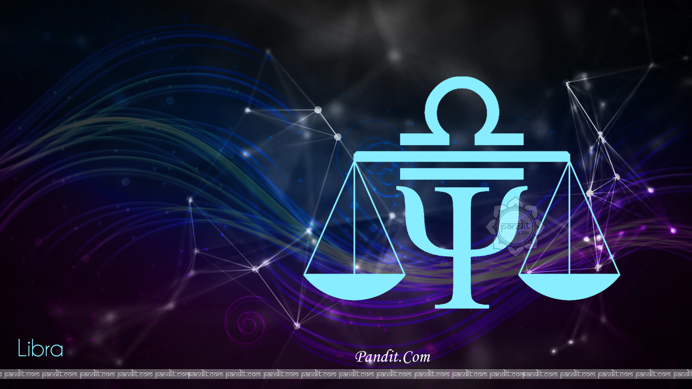

|  |
Libra life in 2019, may have a blend of both rises and falls of situations and outcomes. You may see an increase in your level of reputation in the society, due to the effect of Jupiter.
But as
per the Libra 2019 horoscope, there may be hurdles that you have to deal with while making money due to the effect of Saturn. This will also have
an impact on your mindset which will receive a lot of strain and tension
as well. Furthermore, you will also witness stress and face a lot of struggle in your relationship with your spouse, so try to be
more calm and composed rather than firing back, says Ganesha. Rahu, on the other hand will
have both negative and positive affect in your life, where, on one side you will be honoured by people
and on the other,it will have an impact on your business. |
As per the 2019 Libra horoscope, you may eventually be able to find some sort of stability during this period of time, and thus you should make the most out of it. So, try to hold on to any and
every
opportunity that you get so that you can be very productive and be able to set yourself in every possible way. Keep in mind to stay away from any kind of quarrel or heated discussion at this
point of time.The movement of Venus
with Rahu and Jupiter, this year, will throw you in a better place, which is a good sign.But you may also feel uneasy, nervous and anxious due to the transit
of Saturn and Ketu.So it is recommended to deal with this time,
with equanimity and self control, which will be really beneficial for you. Libra is known to attain stability and maintain an
equilibrium, to be impartial and see things as it is,which gives them the power to balance themselves
in the best manner possible, in accordance with the Libra 2019 predictions. |